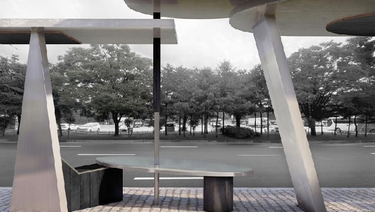

-
-
MMCA 국제미술 소장품 기획전
<미술로, 세계로>
2022-01-20~2022-06-12
1980년대부터 2000년에 이르기까지 국립현대미술관 국제미술 소장품의 수집활동과 전개를 살펴보는 전시이다. 1978년부터 수집해온 다양한 국적의 해외작가 96명의 조각, 드로잉, 회화 등 104점을 전시한다. 이 가운데 초창기 수집 작품 등 절반 이상의 작품이 수집 이후 처음 관람객에 공개된다. 마지막으로 전시된 지 30년여 만에 처음으로 수장고를 벗어나 전시에 출품되는 것도 상당수이다. 전시는 한국미술의 국제교류 양상과 국립현대미술관 국제미술 소장품 수집의 연관성을 중심으로 ‘한국 방문 해외미술’, ‘미술교유, 미술교류’, ‘그림으로 보는 세계’, ‘서울은 세계로, 세계는 서울로’‘미술, 세상을 보는 창’ 등 5부로 구성하였다.
-

#1 경쾌한 항해
-
#2 새마을 운동
-
#3 쟝 바티스타 티에폴로와
빈센트 반 고흐의 만
-
-
-
MMCA 과천프로젝트 2021: 예술버스쉼터
<쓸모없는 건축과 유용한 조각에 대하여>
2021-12-15 ~ 2022-11-20
MMCA 과천프로젝트(MMCA Gwacheon Project)는 국립현대미술관 과천 특화 및 야외공간 활성화를 위해 추진된 공모 프로그램이다.올해는 일정기간 선보이는 야외 파빌리온 건축 및 설치 프로젝트에서 미술관 방문 및 관람 경험의 가치를 높일 수 있는 공간재생 프로젝트로 확장됐다. 새롭게 마련된 '예술버스쉼터'를 통해 대중교통을 이용하여 미술관을 방문하는 관람객들의 생태적 실천에 대한 환대, '자연 속 미술관'으로 향하는 짧지만 즐거운 숲길의 여정, 미술관에서 자연과 예술을 충분히 즐기고 그 여운을 누릴 수 있는 장소적 경험을 제공하고자 한다.
-

#1 모형 사진
-

#2 렌더링 이미지
-
#3 설치 전경
-
-
-
아이 웨이웨이
2021-12-11 ~ 2022-04-17
<아이 웨이웨이: 인간미래>는 회화, 사진에서부터 영화, 설치, 건축, 공공미술, 전시기획, 출판 등 전 방위적으로 활동하는 아이 웨이웨이의 예술세계를 소개한다.아이 웨이웨이의 삶과 예술은 존엄한 인간으로서 자유롭게 대화를 나누며 기쁨과 분노를 표현할 수 있는 삶을 누려야 하며 또 그런 삶을 지금부터 앞으로 올 미래 세대까지 모든 타인들이 함께 누리도록 행동해야 한다고 말한다. 전시 제목 '인간미래'는 그의 예술적 화두인 '인간'과 '(현재보다 더 나은) 미래'를 결합한 것이다. 아이 웨이웨이의 작품을 만나는 이번 전시가 그의 시간과 공간 속으로 함께 걷는 여행이 되기를 바란다.
-
#1 2003년 베이징
-
#2 여의
-
#3 클로드 비알라
-